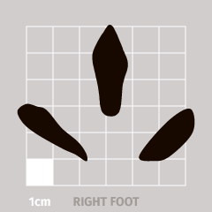
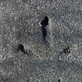
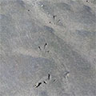

Oystercatcher
Torea, Haematopus





5cm in length. Oystercatchers walk on their toes so heel not always visible. Toes more chunky than Spur-winged plover.
LIKELY SPECIES: South Island Pied Oystercatcher, Variable Oystercatcher